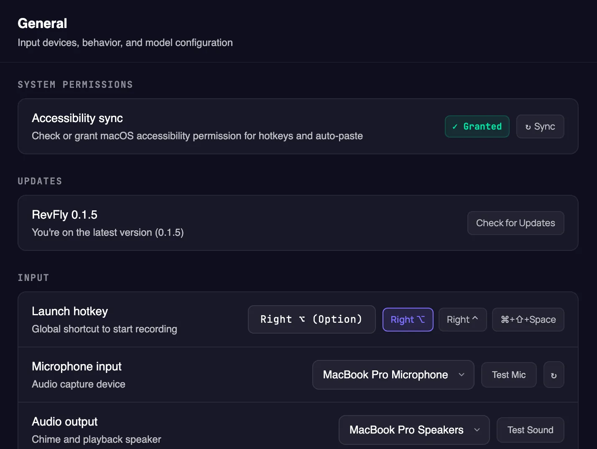
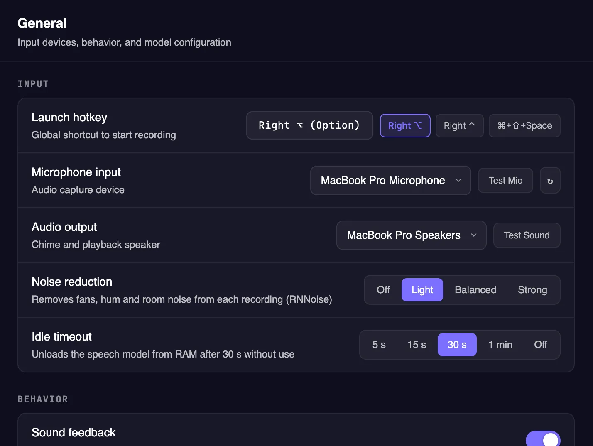
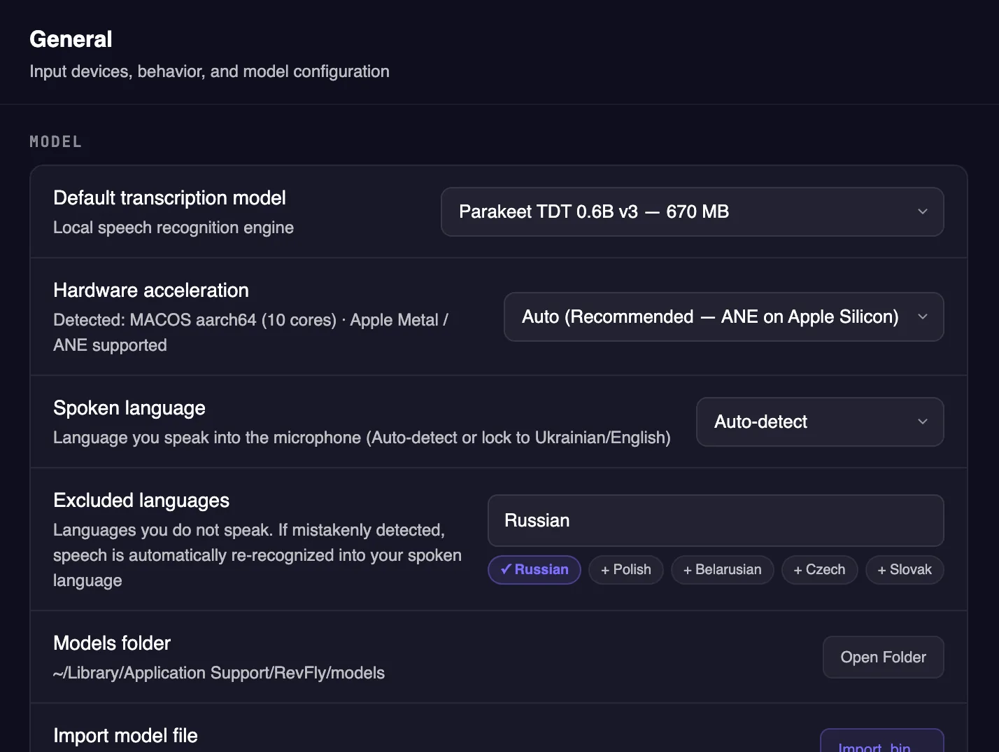
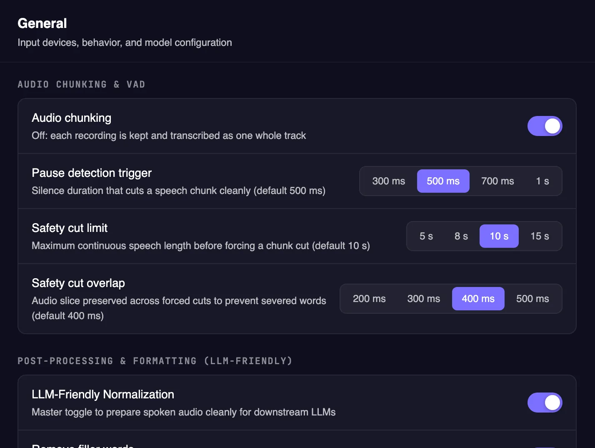
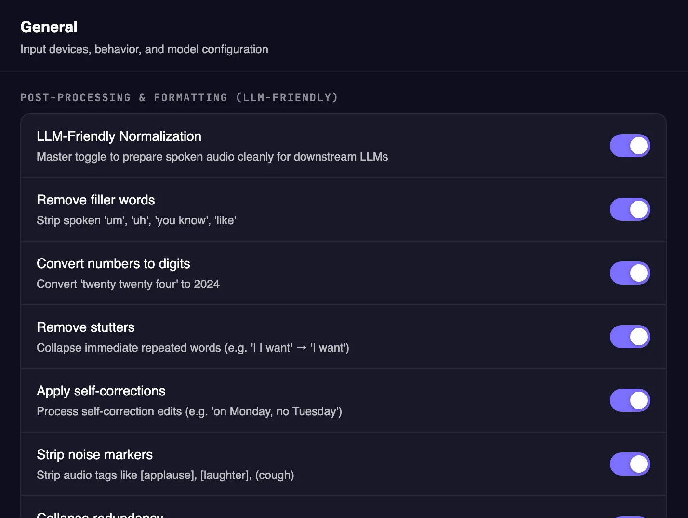
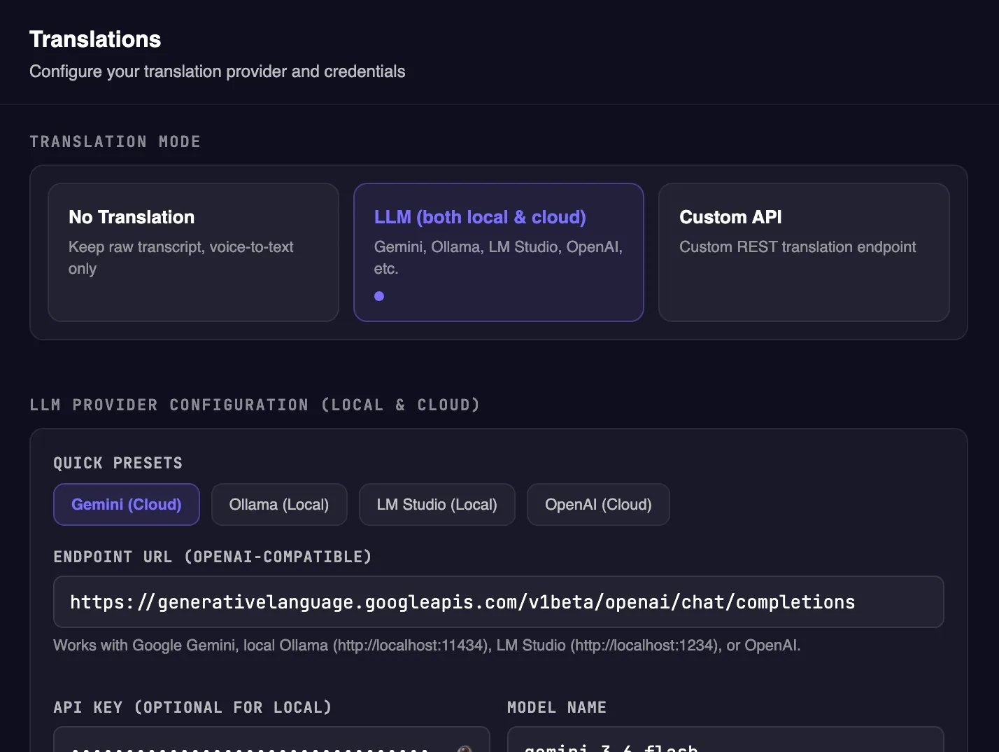
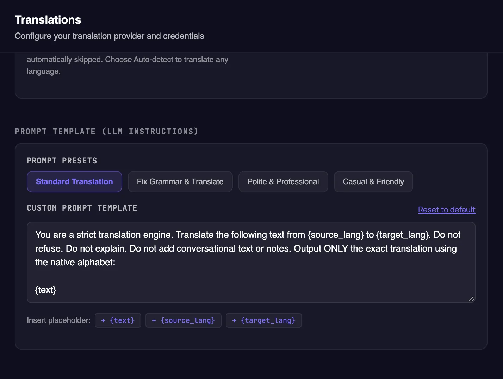
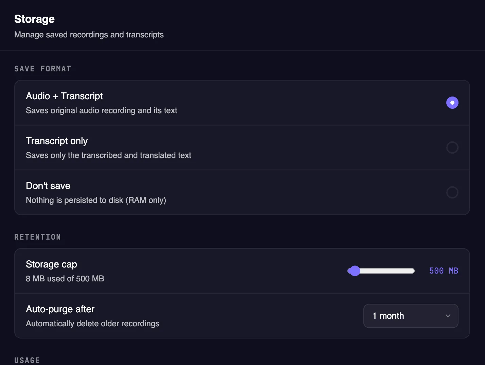
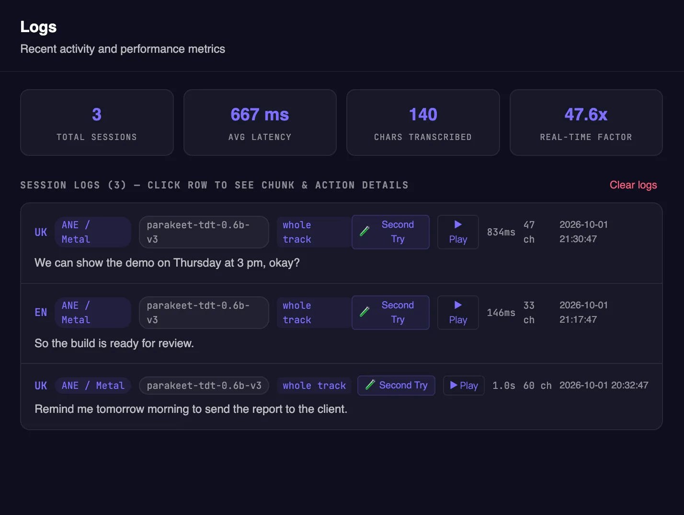
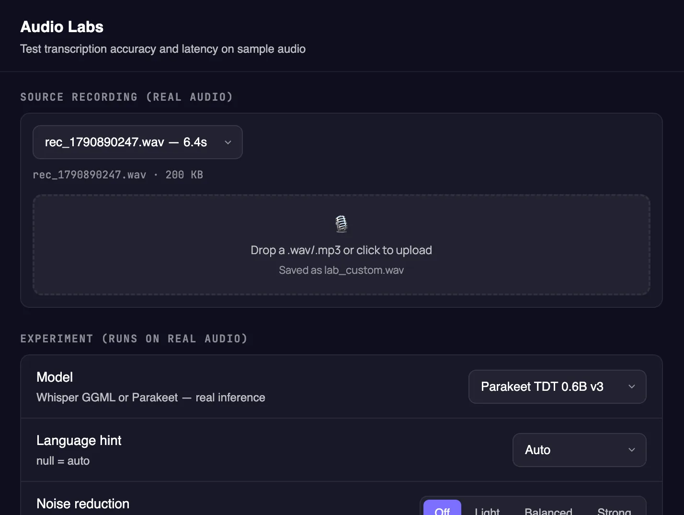

Hotkey & voice pill
Press once to start, again to stop, on macOS, Windows or Linux. A tiny pill floats above every app, with Esc to cancel instantly.
Free & open source · macOS · Windows · Linux
Press a hotkey and talk. RevFly transcribes on your own computer, translates only when you need it, tidies up the text, and pastes it straight into the app you're typing in.
curl -fsSL
https://raw.githubusercontent.com/eotsevych/RevFly/main/scripts/install_mac.sh |
bash
macOS one-liner: installs to Applications with no security prompt.
Features
Press once to start, again to stop, on macOS, Windows or Linux. A tiny pill floats above every app, with Esc to cancel instantly.
Parakeet or Whisper turn speech into text locally, after Silero VAD trims the silence. Nothing leaves your computer to transcribe.
Translate only when you mean to: a second hotkey translates, the first keeps the language you speak. Or translate automatically whatever isn't in your target language. Gemini, Ollama, LM Studio, or any OpenAI-compatible endpoint.
Strips filler words and fixes corrections, formats numbers and dates, and masks names, emails and card numbers before anything reaches a cloud API.
Keep text only, text + audio, or nothing at all. Switch mic, theme and translation mode from the tray, and re-run any recording in Audio Labs.
How it works
Right ⌥ on a Mac, or any combo like Ctrl+Shift+Space. Press once to start and again to finish. Add a second hotkey to translate as you go.
Silence is trimmed by Silero VAD, then Parakeet or Whisper turns speech into text locally, in memory.
Already in your target language? Translation is skipped instantly with no network call at all.
Clean, formatted text lands at your cursor with a simulated ⌘V / Ctrl+V, in any application.
Instant skip Same-language speech jumps from the language check straight to auto-paste.
Voice pill
A small pill floats above your apps while RevFly works. It tells you what's happening at a glance.
Bars move with your voice. The launch hotkey keeps what you say in your language. Press it again to finish, or Esc to cancel.
Started with the translate hotkey: teal, with the target language, until it's done. Automatic translation shows an outlined AUTO→EN badge instead.
Speech becomes text locally. Usually well under a second.
Only when you asked for it: with the translate hotkey, or with Automatic when you speak another language.
The text is at your cursor and in your history.
The mic stopped sending sound. RevFly reopens it, or switches to the system mic.
Privacy by design
Audio is recorded into memory and recognized locally. Nothing is uploaded. Only text is ever sent out, and only when you turn on a cloud translation provider. Use a local LLM and nothing leaves your machine at all.
Keeps transcripts in a local database. No audio is stored.
Also keeps the recordings, so you can replay them or transcribe them again.
Everything stays in RAM. Nothing is written to disk.
Guide
Open Settings from the RevFly icon in your menu bar or system tray. Every setting has a sensible default, so this guide walks through what each one does and when you might want to change it.
RevFly lives in the menu bar (macOS) or system tray (Windows, Linux). There's no main window to keep open.
On a Mac, grant Accessibility for the hotkey and auto-paste. The microphone prompt appears on your first recording.
The Parakeet speech model (670 MB) downloads on first launch. Progress shows in the tray menu.
Press it again to finish. The text appears wherever your cursor is. Press Esc to cancel.
01 · General
RevFly needs to hear your hotkey in any app and to paste text where you type. On macOS both depend on the Accessibility permission.

02 · General
The Input section controls how you start a recording and what RevFly listens with.

03 · General
Recognition runs entirely on your computer. Pick the engine and tell it which languages to expect.
.bin file, or download one from a link.

04 · General
Not every model can take a long conversation in one go. Parakeet, for example, handles about 4 minutes 50 seconds at a time. Chunking splits the recording at natural pauses so nothing is lost.

05 · General
Speech is messy. Normalization turns what you said into clean written text that reads well and that AI tools understand.

06 · Translations
Speak your native language, or any language, and get the text in another one. Pick the target language; speech that's already in it is pasted without translating.
gemini-3.6-flash translates quickly and well. Ollama and LM
Studio run on your computer, offline and without a key.


07 · Storage
Choose what RevFly keeps on your disk. Everything stays local.
Tip: keep audio on. A saved recording can be transcribed again later, as the next two sections show.

08 · Logs
Each recording gets a timeline of what happened to it and how long each step took.

09 · Audio Labs
A workbench for your real recordings. Pick a previous recording or drop in any audio file, then run it through different settings.

Download
Latest release · All releases · Install guide
macOS 11+ · Apple Silicon & Intel
Download .dmgOr with no security prompt:
brew install --cask eotsevych/tap/revfly
Windows 10 & 11 · 64-bit
Download installer (.exe)Also available: .msi package
Ubuntu 24.04+, Debian 13+, Fedora 40+
Download AppImageFAQ
Yes. It's open source under the MIT license, with no account, subscription or usage limits. Cloud translation with Gemini uses your own API key; local models cost nothing.
No. Recording and speech recognition happen locally. If you enable cloud translation, only the recognized text is sent, after the confidentiality guard has masked anything sensitive. With a local LLM, nothing leaves your machine.
Parakeet recognizes 25 European languages, including English and Ukrainian; Whisper models recognize dozens more, offline. Translation works between any languages your chosen provider supports, and speech that's already in your target language is pasted as-is.
Bluetooth headsets sometimes drop their microphone link mid-recording. RevFly notices within a second or two, reopens the mic and keeps what you already said. If the mic was unplugged, it switches to the system mic. If it keeps happening, pick another mic in Settings → General → Microphone input.
RevFly isn't signed with a paid Apple or Microsoft certificate yet, so macOS and Windows show a one-time warning for downloads from a browser. The Terminal one-liner and Homebrew avoid it on Mac; the install guide shows how to allow it otherwise. Updates install from inside the app without the warning.
Any app with a text cursor: Slack, Telegram, WhatsApp, VS Code, Google Docs, Chrome, Terminal and more. RevFly pastes with the normal ⌘V / Ctrl+V shortcut. On Linux, an X11 session works best.